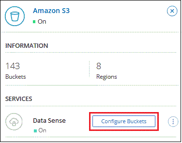

请求文档变更
请求文档变更 在 GitHub 上编辑
在 GitHub 上编辑 提供者指南
提供者指南Amazon S3 云数据感知入门
Cloud Data sense 可以扫描 Amazon S3 存储分段，以确定 S3 对象存储中的个人和敏感数据。Cloud Data sense 可以扫描帐户中的任何存储分段，而不管它是否是为 NetApp 解决方案创建的。
快速入门
按照以下步骤快速入门，或者向下滚动到其余部分以了解完整详细信息。
确保您的云环境能够满足 Cloud Data sense 的要求，包括准备 IAM 角色以及设置从 Data sense 到 S3 的连接。 请参见完整列表。
"部署 Cloud Data sense" 如果尚未部署实例。
选择 Amazon S3 工作环境，单击 * 启用 * ，然后选择包含所需权限的 IAM 角色。
选择要扫描的存储分段， Cloud Data sense 将开始扫描这些存储分段。
查看 S3 前提条件
以下要求特定于扫描 S3 存储分段。
- 为云数据感知实例设置 IAM 角色
-
Cloud Data sense 需要获得连接到您帐户中的 S3 存储分段并对其进行扫描的权限。设置一个包含以下权限的 IAM 角色。在 Amazon S3 工作环境中启用 Data sense 时， Cloud Manager 会提示您选择 IAM 角色。
{ "Version": "2012-10-17", "Statement": [ { "Effect": "Allow", "Action": [ "s3:Get*", "s3:List*", "s3:PutObject" ], "Resource": "*" }, { "Effect": "Allow", "Action": [ "iam:GetPolicyVersion", "iam:GetPolicy", "iam:ListAttachedRolePolicies" ], "Resource": [ "arn:aws:iam::*:policy/*", "arn:aws:iam::*:role/*" ] } ] } - 提供从 Cloud Data sense 到 Amazon S3 的连接
-
Cloud Data sense 需要连接到 Amazon S3 。提供此连接的最佳方式是通过 VPC 端点连接到 S3 服务。有关说明，请参见 "AWS 文档：创建网关端点"。
创建 VPC 端点时，请务必选择与云数据感知实例对应的区域， VPC 和路由表。您还必须修改安全组才能添加出站 HTTPS 规则、该规则允许通信到 S3 端点。否则， Data sense 将无法连接到 S3 服务。
如果遇到任何问题，请参见 "AWS 支持知识中心：为什么我无法使用网关 VPC 端点连接到 S3 存储分段？"
另一种方法是使用 NAT 网关提供连接。

您无法使用代理通过 Internet 访问 S3 。
部署 Cloud Data sense 实例
"在 Cloud Manager 中部署 Cloud Data sense" 如果尚未部署实例。
您需要使用部署在 AWS 中的 Connector 部署此实例，以便 Cloud Manager 自动发现此 AWS 帐户中的 S3 存储分段并将其显示在 Amazon S3 工作环境中。
-
注意： * 扫描 S3 存储分段时，当前不支持在内部位置部署 Cloud Data sense 。
只要实例具有 Internet 连接，就会自动升级到 Data sense 软件。
在 S3 工作环境中激活 Data sense
验证前提条件后，在 Amazon S3 上启用 Cloud Data sense 。
-
从Cloud Manager左侧导航菜单中、单击*画布*。
-
选择 Amazon S3 工作环境。

-
在右侧的数据感知窗格中，单击 * 启用 * 。
-
出现提示时，将 IAM 角色分配给具有的 Cloud Data sense 实例 所需权限。

-
单击 * 启用 * 。

|
您也可以通过单击在配置页面中为工作环境启用合规性扫描  按钮并选择 * 激活数据感知 * 。 按钮并选择 * 激活数据感知 * 。
|
Cloud Manager 将 IAM 角色分配给实例。
在 S3 存储分段上启用和禁用合规性扫描
在 Cloud Manager 在 Amazon S3 上启用 Cloud Data sense 后，下一步是配置要扫描的分段。
如果 Cloud Manager 运行在包含要扫描的 S3 存储分段的 AWS 帐户中，则它会发现这些存储分段并将其显示在 Amazon S3 工作环境中。
云数据感知也可以 扫描位于不同 AWS 帐户中的 S3 存储分段。
-
选择 Amazon S3 工作环境。
-
在右侧窗格中，单击 * 配置分段 * 。

-
在存储分段上启用仅映射扫描或映射和分类扫描。

收件人： 执行以下操作： 在存储分段上启用仅映射扫描
单击 * 映射 *
对存储分段启用完全扫描
单击 * 映射和分类 *
禁用对存储分段的扫描
单击 * 关闭 *
Cloud Data sense 开始扫描您启用的 S3 存储分段。如果存在任何错误，它们将显示在状态列中，并显示修复此错误所需的操作。
从其他 AWS 帐户扫描存储分段
您可以通过从其他 AWS 帐户中分配角色来扫描此帐户下的 S3 存储分段，以访问现有 Cloud Data sense 实例。
-
转到要扫描 S3 存储分段的目标 AWS 帐户，然后选择 * 其他 AWS 帐户 * 来创建 IAM 角色。

请务必执行以下操作：
-
输入 Cloud Data sense 实例所在帐户的 ID 。
-
将 * 最大 CLI/API 会话持续时间 * 从 1 小时更改为 12 小时，然后保存此更改。
-
附加云数据感知 IAM 策略。确保它具有所需的权限。
{ "Version": "2012-10-17", "Statement": [ { "Effect": "Allow", "Action": [ "s3:Get*", "s3:List*", "s3:PutObject" ], "Resource": "*" }, ] }
-
-
转到 Data sense 实例所在的源 AWS 帐户，然后选择附加到该实例的 IAM 角色。
-
将 * 最大 CLI/API 会话持续时间 * 从 1 小时更改为 12 小时，然后保存此更改。
-
单击 * 附加策略 * ，然后单击 * 创建策略 * 。
-
创建一个包含 "STS ： AssumeRole" 操作的策略，并指定您在目标帐户中创建的角色的 ARN 。
{ "Version": "2012-10-17", "Statement": [ { "Effect": "Allow", "Action": "sts:AssumeRole", "Resource": "arn:aws:iam::<ADDITIONAL-ACCOUNT-ID>:role/<ADDITIONAL_ROLE_NAME>" }, { "Effect": "Allow", "Action": [ "iam:GetPolicyVersion", "iam:GetPolicy", "iam:ListAttachedRolePolicies" ], "Resource": [ "arn:aws:iam::*:policy/*", "arn:aws:iam::*:role/*" ] } ] }Cloud Data sense 实例配置文件帐户现在可以访问其他 AWS 帐户。
-
-
转到 * Amazon S3 Configuration* 页面，此时将显示新的 AWS 帐户。请注意， Cloud Data sense 可能需要几分钟时间来同步新帐户的工作环境并显示此信息。

-
单击 * 激活数据感知并选择分段 * ，然后选择要扫描的分段。
Cloud Data sense 将开始扫描您启用的新 S3 存储分段。